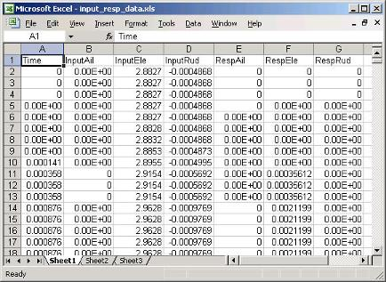
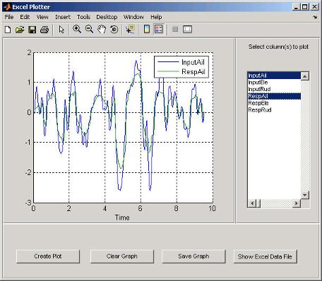

Read Spreadsheet Data Using Excel as Automation Server
This example shows how to use a COM Automation server to access another application from MATLAB®. It creates a user interface to access the data in a Microsoft® Excel® file. If you do not use the Component Object Model (COM) in your applications, then see the functions and examples in Spreadsheets for alternatives to importing Excel spreadsheet data into MATLAB.
To enable the communication between MATLAB and the spreadsheet program, this example creates an object in an Automation server running an Excel application. MATLAB then accesses the data in the spreadsheet through the interfaces provided by the Excel Automation server. Finally, the example creates a user interface to access the data in a Microsoft Excel file.
Techniques Demonstrated
Use of an Automation server to access another application from MATLAB
Ways to manipulate Excel data into types used in the interface and plotting
The following techniques demonstrate how to visualize and manipulate the spreadsheet data:
Implementation of an interface that enables plotting of selected columns of the Excel spreadsheet.
Insertion of a MATLAB figure into an Excel file.
Create the function actx_excel.m with this code.
Note
To access the data file input_resp_data.xls in this example,
you must install the documentation.
Create Excel Automation Server
The first step in accessing the spreadsheet data from MATLAB is to run the Excel application in an Automation server process using the actxserver function and the program ID,
excel.application.
exl = actxserver('excel.application');The exl object provides access to a number of interfaces supported
by the Excel program. Use the Workbooks interface to open the
Excel file containing the data.
exlWkbk = exl.Workbooks;
exlFile = exlWkbk.Open([docroot '/techdoc/matlab_external/examples/input_resp_data.xls']);Use the workbook Sheets interface to access the data from a
Range object, which stores a reference to a range of data from the
specified sheet. This example accesses all the data from the first cell in column
A to the last cell in column G.
exlSheet1 = exlFile.Sheets.Item('Sheet1'); robj = exlSheet1.Columns.End(4); % Find the end of the column numrows = robj.row; % And determine what row it is dat_range = ['A1:G' num2str(numrows)]; % Read to the last row rngObj = exlSheet1.Range(dat_range);
At this point, the entire data set from the Excel file's sheet1 is accessed via the range object
interface rngObj. This object returns the data in a MATLAB cell array exlData, which contains both numeric and
character data:
exlData = rngObj.Value;
Manipulate Data in MATLAB Workspace
Now that the data is in a cell array, you can use MATLAB functions to extract and reshape parts of the data to use in the interface and to pass to the plot function. For assumptions about the data, see Excel Spreadsheet Format.
The following code manipulates the data:
for ii = 1:size(exlData,2) matData(:,ii) = reshape([exlData{2:end,ii}],size(exlData(2:end,ii))); lBoxList{ii} = [exlData{1,ii}]; end
The code performs the following operations:
Extracts numeric data from the cell array. See the indexing expression inside the curly braces
{}.Concatenates the individual doubles returned by the indexing operation. See the expression inside the square brackets
[].Reshapes the results into an array that arranges the data in columns using the
reshapefunction.Extracts the text in the first cell in each column of
exlDatadata and stores the text in a cell arraylBoxList. This variable is used to generate the items in the list box.
Excel Spreadsheet Format
This example assumes a particular organization of the Excel spreadsheet, as shown in this image.

The format of the Excel file is:
The first element in each column is text that identifies the data contained in the column. These values are extracted and used to populate the list box.
The first column
Timeis used for the x-axis of all plots of the remaining data.All rows in each column are read into MATLAB.
Create Plotter Interface
This example uses an interface that enables you to select from a list of input and response data. All data is plotted as a function of time and you can continue to add more data to the graph. Each data plot added to the graph causes the legend to expand.
The interface includes these details:
Legend that updates as you add data to a graph
Clear button that enables you to clear all graphs from the axes
Save button that saves the graph as a PNG file and adds it to another Excel file
Toggle button that shows or hides the Excel file being accessed
Figure delete function to terminate the Automation server
Select and Plot Data
When you click the Create Plot button, its callback function queries the list box to determine what items are selected and plots each data versus time. MATLAB updates the legend to display new data while still maintaining the legend for the existing data.
function plotButtonCallback(src,evnt) iSelected = get(listBox,'Value'); grid(a,'on');hold on for p = 1:length(iSelected) switch iSelected(p) case 1 plot(a,tme,matData(:,2)) case 2 plot(a,tme,matData(:,3)) case 3 plot(a,tme,matData(:,4)) case 4 plot(a,tme,matData(:,5)) case 5 plot(a,tme,matData(:,6)) case 6 plot(a,tme,matData(:,7)) otherwise disp('Select data to plot') end end [b,c,g,lbs] = legend([lbs lBoxList(iSelected+1)]); end % plotButtonCallback
Clear the Axes
The plotter is designed to continually add graphs as the user selects data from the list box. The Clear Graph button clears and resets the axes and clears the variable used to store the labels of the plot data (used by legend).
%% Callback for clear button function clearButtonCallback(src,evt) cla(a,'reset') lbs = ''; end % clearButtonCallback
Display or Hide Excel File
The MATLAB program has access to the properties of the Excel application running in the Automation server. By setting the
Visible property to 1 or
0, this callback controls the visibility of the Excel file.
%% Display or hide Excel file function dispButtonCallback(src,evt) exl.visible = get(src,'Value'); end % dispButtonCallback
Close Figure and Terminate Excel Automation Process
Since the Excel Automation server runs in a separate process from MATLAB, you must terminate this process explicitly. There is no reason to keep
this process running after closing the interface, so this example uses the figure's
delete function to terminate the Excel process with the Quit method. You also need to
terminate the Excel process used for saving the graph. For information about terminating
this process, see Insert MATLAB Graphs into Excel Spreadsheet.
%% Terminate Excel processes function deleteFig(src,evt) exlWkbk.Close exlWkbk2.Close exl.Quit exl2.Quit end % deleteFig
Insert MATLAB Graphs into Excel Spreadsheet
You can save the graph created with this interface in an Excel file. This example uses a separate Excel Automation server process for this purpose. The callback for the Save Graph push button creates the image and adds it to an Excel file:
Both the axes and legend are copied to an invisible figure configured to print the graph as you see it on the screen (figure
PaperPositionModeproperty is set toauto).The
printcommand creates the PNG image.Use the
Shapesinterface to insert the image in the Excel workbook.
The server and interfaces are instanced during the initialization phase:
exl2 = actxserver('excel.application'); exlWkbk2 = exl2.Workbooks; wb = invoke(exlWkbk2,'Add'); graphSheet = invoke(wb.Sheets,'Add'); Shapes = graphSheet.Shapes;
Use this code to implement the Save Graph button callback:
function saveButtonCallback(src,evt) tempfig = figure('Visible','off','PaperPositionMode','auto'); tempfigfile = [tempname '.png']; ah = findobj(f,'type','axes'); copyobj(ah,tempfig) % Copy both graph axes and legend axes print(tempfig,'-dpng',tempfigfile); Shapes.AddPicture(tempfigfile,0,1,50,18,300,235); exl2.visible = 1; end
Run Example
To run the example, select any items in the list box and click the Create Plot button. The sample data provided with this example contain three input and three associated response data sets. All of these data sets are plotted versus the first column in the Excel file, which is the time data.
View the Excel data file by clicking the Show Excel Data File button. To save an image of the graph in a different Excel file, click the Save Graph button. If you have write-access permission in the current folder, then the Save Graph option creates a temporary PNG file in that folder.
This image shows the interface with an input/response pair selected in the list box and plotted in the axes.
